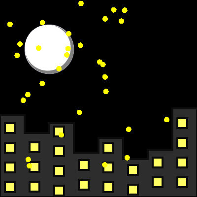

    <div class="artpiece gif">
        
        <div class="name">Benjamin Silva</div>
        <span class="title">Starry Night</span>
        <span class="language">JavaScript
            <a class="source-link" href="https://editor.p5js.org/bsilva2026/sketches/3XW7S9G2r" target="_blank">(source)</a>
        </span>
    </div>
    